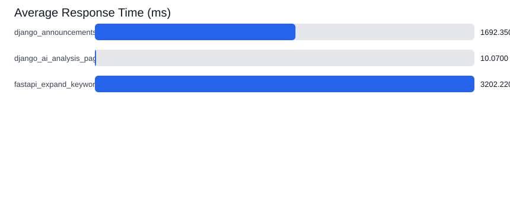
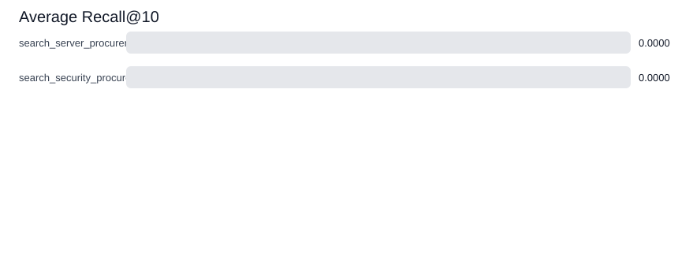
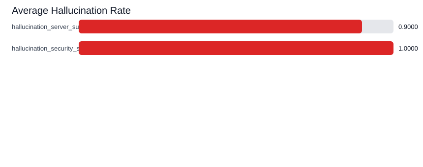

| avg_ms | case_name | max_ms | median_ms | metric | min_ms | p95_ms | sample_count |
|---|---|---|---|---|---|---|---|
| 1692.35 | django_announcements_search_server | 2522.79 | 1537.64 | response_time | 1357.55 | 2346.81 | 10 |
| 10.07 | django_ai_analysis_page | 12.2 | 9.73 | response_time | 9.07 | 12.04 | 10 |
| 3202.22 | fastapi_expand_keywords | 3625.44 | 3154.69 | response_time | 3040.15 | 3504.31 | 10 |

| avg_recall_at_10 | case_name | max_recall_at_10 | median_recall_at_10 | metric | min_recall_at_10 | sample_count |
|---|---|---|---|---|---|---|
| 0.0 | search_server_procurement | 0.0 | 0.0 | recall_at_10 | 0.0 | 10 |
| 0.0 | search_security_procurement | 0.0 | 0.0 | recall_at_10 | 0.0 | 10 |

| avg_hallucination_rate | case_name | max_hallucination_rate | median_hallucination_rate | metric | min_hallucination_rate | sample_count |
|---|---|---|---|---|---|---|
| 0.9 | hallucination_server_summary | 1.0 | 1.0 | hallucination_rate | 0.0 | 10 |
| 1.0 | hallucination_security_summary | 1.0 | 1.0 | hallucination_rate | 1.0 | 10 |